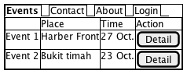
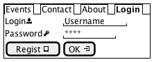
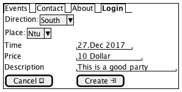
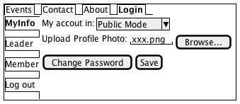

salt
{+
{/ <b>Events | Contact | About | Login }
{#
. | Place | Time | Action
Event 1 | Harber Front | 27 Oct. | [Detail]
Event 2 | Bukit timah | 23 Oct. | [Detail]}
}

salt
{+
{/ Events | Contact | About | <b>Login }
{
Login<&person> | "Username "
Password<&key> | "**** "
[Regist <&tablet>] | [OK <&account-login>]
}
}

salt
{+
{/ Events | Contact | About | <b>Login }
{
Username | " "
Password | " "
Roles: | {[] Leader | [] Member }
Upload Profile Photo: | { "xxx.png" | [Browse...] }
}
}
salt
{+
{/ Events | Contact | About | <b>Login }
{
{ Direction: | ^South^ }
{ Place: | ^Ntu^ }
Time | "27.Dec 2017"
Price | "10 Dollar "
Description | "This is a good party"
}
}

salt
{+
{/ Events | Contact | About | <b>Login }
{
{/ <b>MyInfo
Leader
Member
Log out } |
{
{ My accout in: | ^Public Mode^ }
{Upload Profile Photo: { "xxx.png" | [Browse...] }}
{[Change Password] | [Save]}
}
}
}

salt
{+
{/ Events | Contact | About | <b>Login }
{
{T
+ Singapore
++ East
+++ USA
++++ New York
+++ Mexico
++ West
+++ <b>Ntu
++ North
+++ Germany
++++ Berlin
++ South
} |
{
Leader : XiongChenYu
..
Place : "Ntu"
==
Time: 11. July
~~
Description : XXXXXXXXXXXXXXXXXXX
--
{[Back] | [Pay and Join]}
}
}
}